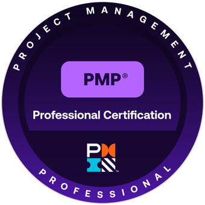

The Excel Trap
Eliminate manual data entry between disconnected enterprise tools.
Work With Ian Worthington
I partner with middle managers and frontline teams to replace manual workarounds, ghost spreadsheets, and outdated approval loops with practical automation that fits your current stack.
Why Work With Ian
I work directly with managers and frontline staff to map where work gets stuck, then fix those points with practical integrations and automation.
You get one partner who can diagnose operational bottlenecks, design the technical approach, and build the solution with your team.
The result is less manual rework, faster decisions, and systems people can trust again.
Credential

PMP certification signals proven project leadership across scope, risk, quality, and stakeholder alignment. In practical terms, I help your team move from firefighting to predictable delivery with clear milestones, accountable ownership, and outcomes you can measure.
Problem / Solution
You are not imagining the friction. These are the most common enterprise bottlenecks I see, and the first ones I help teams eliminate.
Eliminate manual data entry between disconnected enterprise tools.
Turn manual sign-off loops into automated, transparent workflows.
Bridge the gap between outdated legacy software and modern efficiency without the risk of a total overhaul.
How I Work
My role is to design and build your internal glue layer: a master workflow, approval, and integration system for companies that want to keep sensitive data on-premise.
01
I work with your managers and frontline teams to map current workflow gaps, approval delays, and manual handoffs.
02
To build a prototype, we need access to your infrastructure, relevant data, and a responsible internal owner for on-prem integration.
03
I implement a working on-prem proof-of-concept that centralizes workflow orchestration, approvals, and integrations.
04
The system is vendor-neutral. Any experienced n8n partner can maintain or extend it, so you stay in control.
Without infrastructure access, relevant data, and a designated integration owner, we cannot build a reliable proof-of-concept.
With those prerequisites in place, we can move quickly and validate value on your own environment.
Consulting and Build
Integration-first. Self-service by design. Built where your people already work.
I connect your current systems first, then remove manual bridges and duplicate entry.
I build workflows your operations teams can adjust without waiting on long IT queues.
I deliver CEO-level visibility while keeping frontline workflows simple and low-friction.
Results and Trust
From middle management to frontline staff, I hear the same outcome: less rework, faster decisions, and clearer accountability.
"We finally killed the spreadsheet relay race between departments. Cycle time dropped in weeks."
"Approval status is now visible end-to-end. No more chasing email threads."
"We modernized around our legacy core instead of pausing the business for a rewrite."
Modelling
A curated gallery with editorial and lifestyle direction.
.jpg)